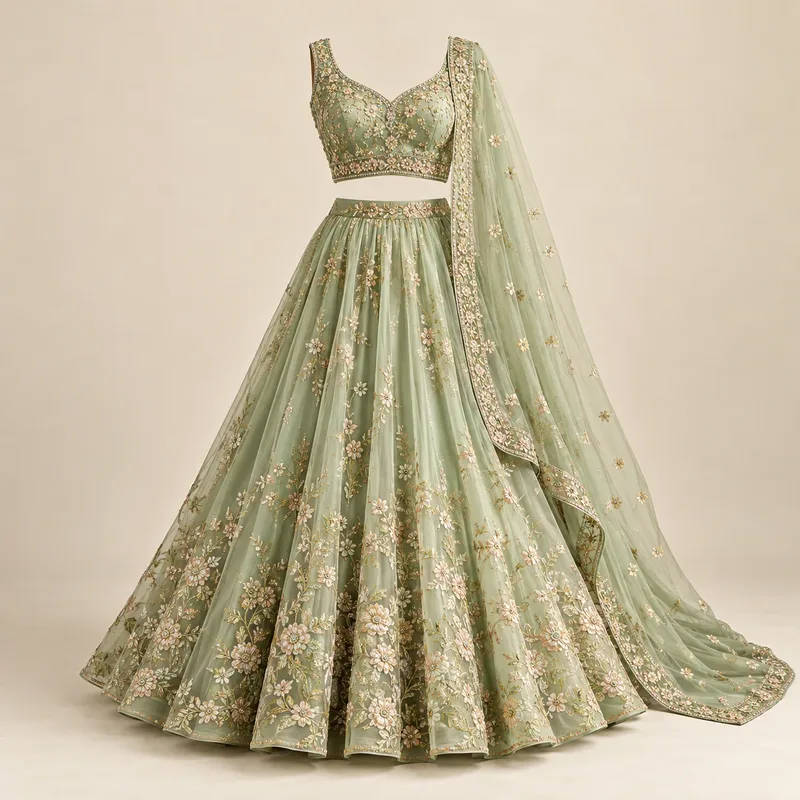
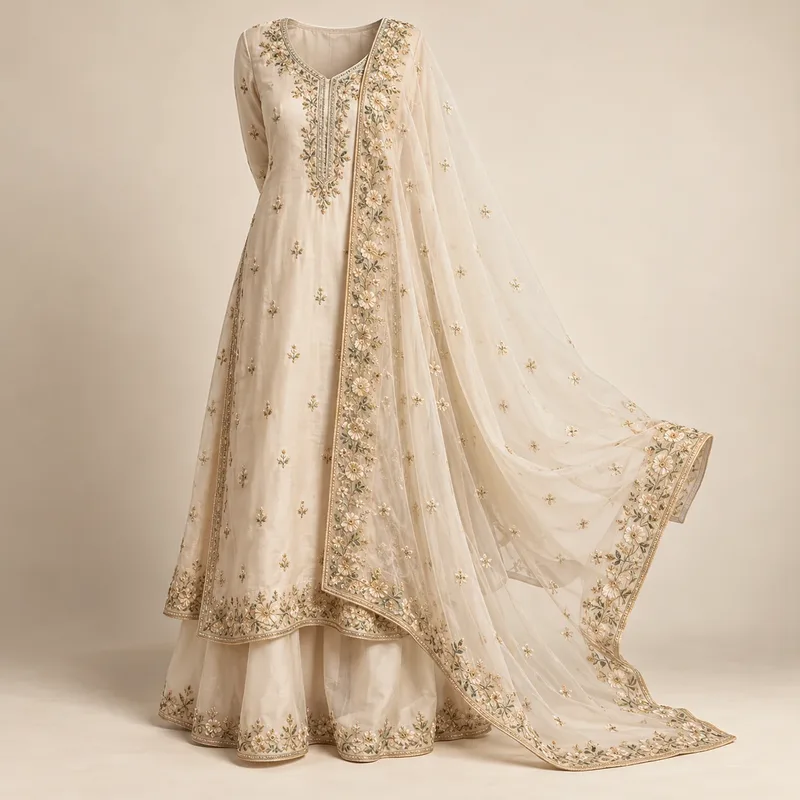

India festive and wedding trends 2026–27: what to design now
The festive and wedding looks India will wear from Diwali 2026 to Festive 2027: pre-draped sarees, cape lehengas, kurta co-ords, jewel tones and the details behind them, with rupee price bands.

India's festive and wedding calendar is long and crowded. Between Dussehra, Diwali and the winter wedding season, many shoppers attend several functions in a few weeks, and each one asks for a different look. That pressure is reshaping what sells. The strongest direction for 2026–27 is not a single colour or embroidery, but an idea: festive made easy.
This guide summarises what Forecut is tracking for the Festive 26 window (October 2026 to February 2027) and how it carries into Summer 27 and Festive 27. It draws on public coverage of Lakmé Fashion Week x FDCI 2026, festive trend guides from Indian retailers, and our own detail-level tracking.
Festive dressing gets easier
Ready-to-wear sarees with stitched pleats and a fixed pallu, embroidered kurta co-ords, fusion kaftans, cape lehengas and lighter organza for the sangeet all share one promise: you can be dressed in minutes and wear the piece again. Fit-and-flare Anarkalis are the safe all-rounder because they suit most body types and most functions.
Why now? Schedules are busy and weddings have more events than ever, so shoppers want looks they can put on quickly and repeat without it feeling like a repeat. Designers such as Satya Paul styled fluid sarees for the office, while Abraham & Thakore showed sari-inspired silhouettes, printed co-ords and kaftans.
Lehengas get lighter, capes get bigger
The heavy, can-only-wear-once lehenga is giving ground to lighter organza versions for day functions and sangeet, and to cape lehengas where a sheer cape or overlay replaces the traditional dupatta. Ombré and dual-tone skirts and fish-cut shapes add variety without adding weight.


Colour: jewel tones, refined
Jewel tones still lead festive wear, but in richer and more refined shades: emerald, sapphire and deep wine, often paired with champagne or antique gold rather than bright yellow gold. Blue, from deep indigo to blue-and-white, was the most-seen colour story at Lakmé Fashion Week 2026 and works for both festive and everyday.

Details worth adding
- Corset saree blouses and off-shoulder blouses refresh an existing saree without a new drape.
- Organza dupattas with embroidered borders sell well as add-ons to plain sets.
- Tissue sarees in champagne gold deliver evening shine without heavy embroidery.
- Scalloped and cutwork borders are the trim of the season on organza and georgette.

Price bands in India
Indicative retail bands in rupees, for planning ranges across value, mid and premium:
| Item | Value ₹ | Mid ₹ | Premium ₹ |
|---|---|---|---|
| Pre-draped saree | 1,999–3,999 | 5,000–12,000 | 25,000+ |
| Embroidered kurta co-ord | 1,499–2,999 | 3,500–8,000 | 18,000+ |
| Cape or organza lehenga | 3,999–7,999 | 12,000–35,000 | 75,000+ |
What to do this season
- Offer your hero festive look in a pre-draped or co-ord version as well as the classic one.
- Add capes and organza dupattas as add-ons to sell up from a base set.
- Show three ways to wear each piece across different wedding functions in your product images.
- Keep embroidery to placement areas and reuse one base silhouette across colours to control cost.